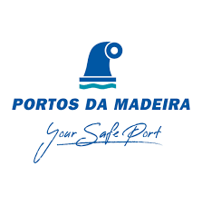

Experiência Profissional

Agosto 2024 - Outubro 2024
Administração dos Portos da Região Autónoma da Madeira. Madeira, Portugal
Técnico de Sistemas de Informação
- Elaboração de um Plano Prévio de Intervenção;
- Análise detalhada dos riscos afetos às operações portuárias;

Agosto 2022
Câmara Municipal do Porto Santo. Madeira, Portugal
Técnico de Proteção Civil
- Elaboração de um Plano de Emergência para um evento local
- Iventariação de riscos no município;
Sítio: Município Porto Santo
Junho 2019 - Julho 2022
Instituto de Socorros a Naufragos. São Miguel, Portugal
Nadador Salvador
Sítio: Autoridade Marítima
Janeiro 2017 - Setembro 2019
Associação de Basquetebol da Madeira
Juíz de Basquetebol
Sítio: Associação de Basquetebol da Madeira